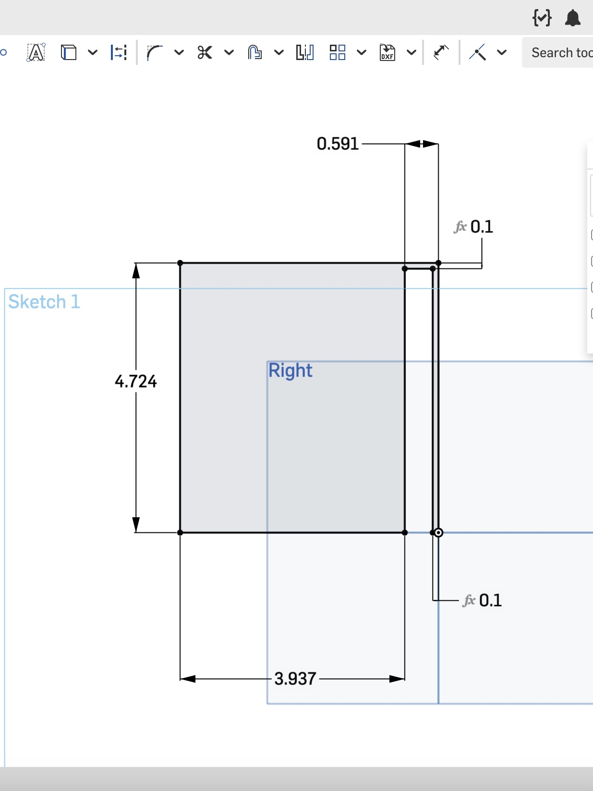
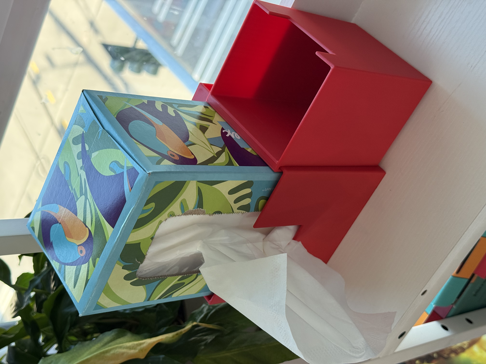
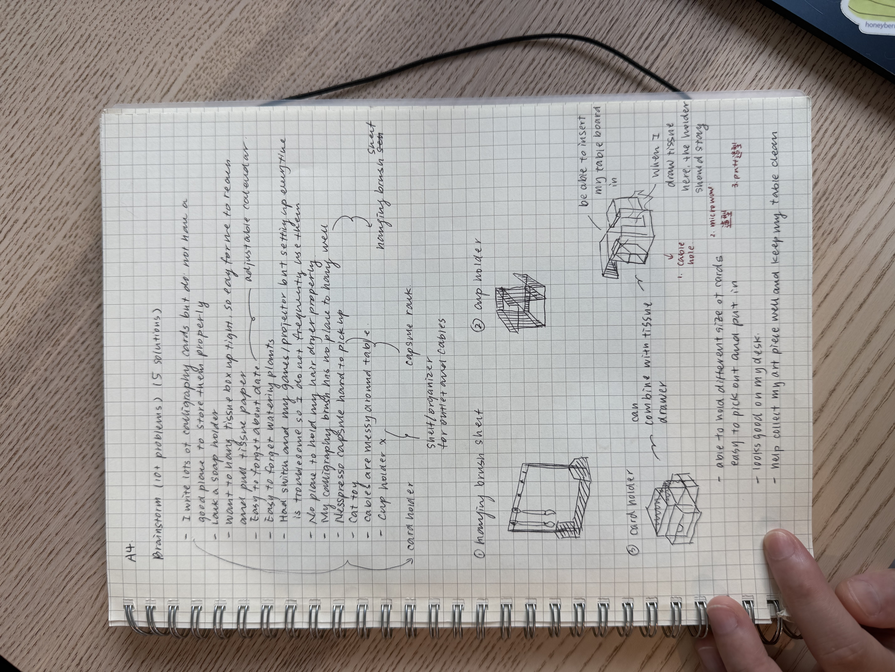
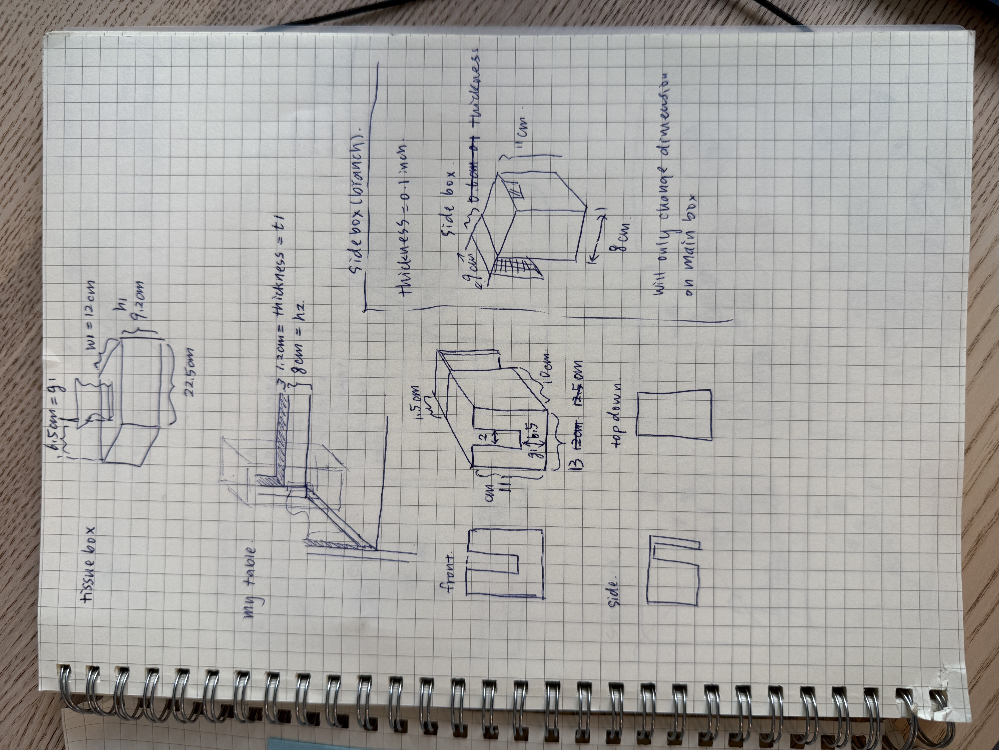
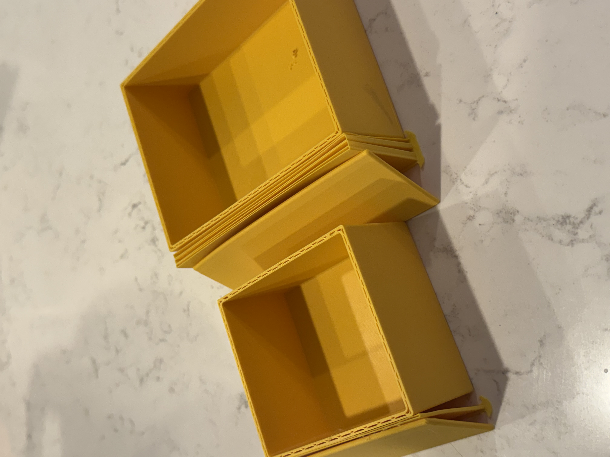

I outlined the first side sketch in Onshape to establish the mounted profile and overall proportions.
Assignment 4

Prompt
The purpose of this assignment is to use 3D modeling and printing as a medium-fidelity prototyping technique for testing design assumptions and reducing risk, particularly where dimensions, fit, structure, or interaction matter.
Requirements
The object needed to serve a useful everyday function rather than existing only as decoration.
The design had to rely on precise sizing so the mounted holder would fit, attach, and function correctly.
The success of the prototype depended on physical fit and the structure holding up under repeated tissue pulling and side-box attachment.
Feature Review / Design
The main idea was a vertical mounted tissue holder that integrates with the desk side panel instead of sitting on the desktop. That decision came from wanting a solution that feels clean, space-saving, and easy to access with one hand.
In addition to holding tissues, I wanted the design to be expandable. That led to the idea of side boxes that can attach around the main holder so the object could provide extra storage without taking up more desk surface.
The most important part of this project was fit and feasibility. I needed the holder to mount tightly to the desk, support repeated tissue pulling, and still keep the interaction easy to use with one hand while preserving desk space.
Sketches
The first sketch focused on broad ideation and narrowing toward a final direction. The second sketch worked through the dimensions and design details, and I entered those measurements in centimeters in Onshape to match my sketching process before letting the software automatically translate them into inches. The third image documents a test print for dimension checking, which confirmed that the fit was working as intended.



Prototype process
Critique & Feedback
In user testing, n = 8. Overall, people understood and liked the design, although the concept felt very personal, so people were less attracted to it beyond recognizing its feasibility and usability.
My evaluation focused mainly on feasibility, especially whether the holder could support one-handed tissue access while maintaining desk-space efficiency and withstanding the repeated pressure of tissue pulling. The main metrics were smooth one-handed tissue pulling, flexibility of attaching and removing the modular side box, tight fit to the desk side panel, and good strength through multiple uses.
I prepared a video demonstration showing the tissue holder installed with a side storage attachment. That video helped people understand the concept and visually evaluate feasibility, but I also realized that bringing the prototype in person and letting people try it directly would have made the testing more tangible and more reliable.
Based on my own use, need, and testing, the box attached very firmly to my desk, allowed easy one-handed use, and generally performed as expected.
Analysis
Every dimension of my design turned out very precise and tightly fitted. That result came from setting variables early, building a careful model, and doing multiple rounds of sketching and ideation before committing to the final geometry.
What worked especially well was the relationship between dimensional accuracy and final assembly. The holder fit the desk side panel closely, functioned as intended, and supported the repeated action of pulling tissues without the structure loosening or shifting. That confirmed that the prototype was effective in the areas that mattered most for this assignment: fit, physical behavior, and everyday usability.
At the same time, the testing also showed a limitation in how the concept was evaluated. The prototype itself performed well, but because much of the critique relied on a video rather than direct hands-on use, the testing emphasized understanding the concept more than physically experiencing it. If I repeated this evaluation, I would make the in-person interaction a larger part of the testing setup.
Reflection
I enjoyed that creating a personal prototype felt exciting, useful, and not as difficult as I initially expected. That experience made me more open to creating personal functional objects in the future.
One challenge was that the printing process was long and full of unexpected issues. During my first test print, I noticed that the base of the box was slightly dented. After researching the issue, I added a brim so the base could attach to the print board more securely.
I already had a good experience with 3D printing, so making the model itself was not the hardest part. The real challenge was getting the size exactly right, which was also the part I enjoyed the most. I also found Onshape easier and smoother to use than SolidWorks on my Mac, and the branch/version workflow made it easy to create the side box quickly by adjusting the dimensions of the main box.
AI use
This website was built mostly through vibe coding, although I designed the overall visual style myself. I wrote the content for each section on a single page first and also wrote instructions for each section as a starting point for implementation.
As I pasted content into the site, AI improved some of my writing while formatting it for the webpage and occasionally generated section titles. I can confirm that more than 95% of the content is still my original work.
One special case is the process section: I wrote most of that content in Chinese first so I could describe the build steps accurately, since I did not know the English phrasing for some of them.